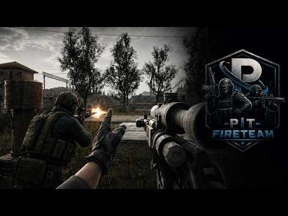
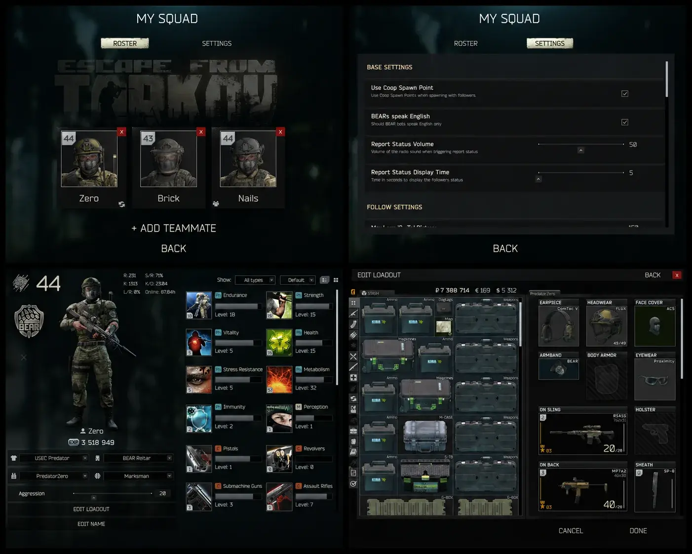
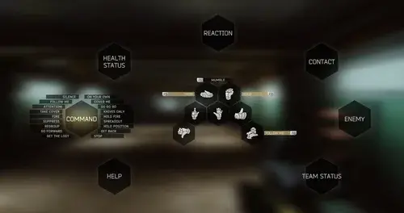
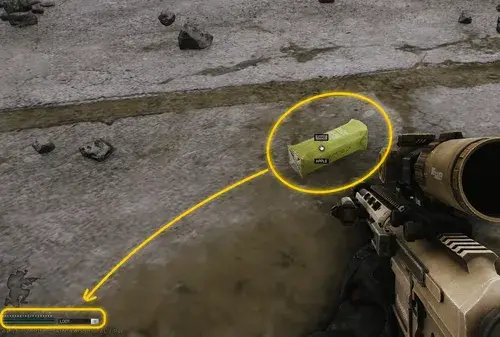
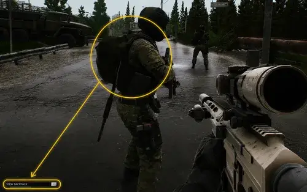
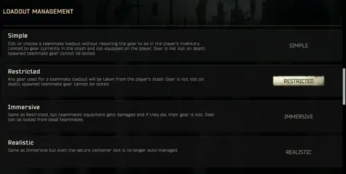

PIT Fireteam
- Downloads
- 22,335
- Favourites
- 91
- Mod lists
- 100
This is the official successor of the Friendly PMC mod that was available for SPT 3.x.
Pit Fire Team makes it possible to have bots follow you around and fight alongside you against enemies. You can create a customizable PMC squad, bring selected teammates into raids, recruit eligible same-side bots during a raid, and use Tarkov’s existing phrase and gesture system to command your teammates.
If you would like to show your appreciation, you can support me at Ko-Fi.
Beta release note: This is the first beta of the new version. Not every feature from the previous version has been ported yet. Features that are planned but not currently available are listed under Upcoming.
It is highly recommended for new players to read Gameplay Guide and Known Issues before playing.
Gameplay:

You can manage your teammates from the in-game My Squad screen. From there, you can build your roster, adjust squad settings, customize individual teammates, invite them into your raid group, and decide who should automatically join future raids.
Notable features:
- Dedicated squad screen - manage your roster, customize teammates, and settings from a separate My Squad interface.
- Teammate customization - change teammate name, appearance, voice, tactic, aggression, and loadout.
- Weapon-aware combat - teammate decisions consider weapon role, caliber, magazine capacity, ammo penetration, and secondary weapon options.
- Teammate commands - issue combat, movement, attention, loot, and door commands through existing Tarkov phrases and gestures.
- Objective-based combat orders - use commands such as Go Forward, Need Help, Cover Me, and Suppress to shift squad priorities without directly micromanaging every movement.
- Raid group support - invite teammates into your group manually or use Auto Join to preload selected teammates into your next PMC raid.
- Map transitions - teammates who you spawned with can follow you through map transitions.
- Progression system - teammates gain raid experience and common-skill progress that persists between raids.
- Quest assist - teammate kills can count toward player kill quests when the kill meets the quest criteria.
- Faction hostility repair - a default-on Raid setting repairs missing BEAR-versus-USEC and PMC-versus-Scav/Scav-boss enemy relationships. Cultists, Raiders, and Rogues use neutral warning relationships toward Scavs instead of immediate hostility, while existing player-Scav karma hostility remains authoritative. Partisan is excluded so his stock karma, zone, and proximity behavior remains in control.
- Looting and loot return - teammates who you spawned with can pick up loot, search bodies and containers on command, return carried items after the raid, and let you manage their backpacks while in raid. (See Looting)
- Fallen teammate gear gathering - outside combat, a teammate can be ordered to check a body and gather recoverable gear from it, mainly to help collect gear from fallen squadmates.
- Post-raid reports - receive report about if your team made it out with the loot after you died. (See Gameplay Guide > Raid Survival Post Player)
Compatibility tested with:
- SAIN installed
- Looting Bots installed
- Acid’s Bot Placement System
- Acid’s Progressive Bot System
The mod is still sensitive to other mods that heavily change bot AI, grouping, perception, hostility, or spawning. If teammates become hostile, ignore enemies, or behave strangely, test with fewer bot-related mods first.
Required dependency:
Recommended:
- WAYPOINTS - EXPANDED NAVMESH, because teammates can have a harder time navigating without expanded navmesh data.
Extract the downloaded archive into your SPT install directory. It should add files under both BepInEx and user / SPT/user, depending on your SPT layout.

My Squad is the main management screen.
It has two main tabs:
- Roster - create teammates, view existing teammates, invite them to the group, toggle Auto Join, open their profile, or remove them.
- Settings - configure squad options from an in-game screen instead of relying only on the BepInEx configuration window.
Teammate portrait actions (Right-click):
- Invite to group - adds the teammate to your current pre-raid group.
- View profile - opens the teammate profile for customization.
- Auto Join on/off - controls whether this teammate automatically joins your next PMC raid setup.
During a raid, the settings view can also be opened from the pause menu through the My Squad settings entry.
Teammates can be customized from their profile screen.
Currently available:
- Rename teammate.
- Change clothing using the stock clothing selectors.
- Manage teammate equipment through the active Loadout Management mode.
- In Simple, select Default or a saved player equipment build as a template without consuming stash items.
- In Restricted, Immersive, and Realistic, use Kit Loadouts to purchase or equip saved player kits for the teammate.
- Edit the teammate’s Default kit from the profile screen.
- Select a combat tactic.
- Adjust aggression for Rifleman and Marksman tactics.
- View teammate-relevant skills.
Tactics available:
Rifleman- the default balanced combat style. Riflemen stay useful near the boss when there is no good attack opportunity, but can push, search, and pressure when the enemy state and aggression allow it.Marksman- ranged-focused behavior for sniper-style teammates. Marksmen prefer firing positions and distance, avoid generic assault pushes, and can switch to an automatic secondary for close fights when appropriate.
Aggression slider:
Aggression controls how willing a teammate is to leave boss-local safety for proactive pressure. Lower aggression keeps teammates more defensive and boss-local. Higher aggression allows more search, push, and pressure when combat conditions justify it. At 0%, teammates avoid proactive pressure and prefer to stay around the boss. The combat Hold Position command temporarily behaves like 0% aggression until combat ends or Go Go Go clears it.
Rifleman aggression: Rifleman uses 50% as its default balanced baseline. Lower values bias toward cover, support, and regroup. Higher values make Riflemen more willing to push or search farther from the boss when threat checks allow it.
Marksman aggression: Marksman uses 30% as its default baseline. Marksman aggression is tactic-relative: it mainly controls proactive automatic-weapon close-search/auto-search pressure. It does not turn Marksman into a generic Rifleman, and it does not block defensive automatic secondary use when enemies get close. At 0%, Marksman avoids proactive auto-search and stays range/position focused. Higher values make Marksman more willing to use automatic-weapon offensive search when distance and threat checks are safe.
Loadout customization:
Loadout customization changes based on the selected Loadout Management mode.
In Simple, teammate gear is template-based. The editor can use gear from your stash as a reference without consuming the real items, and teammate gear is protected from raid loss.
In Restricted, Immersive, and Realistic, teammate equipment is treated as real gear. Editing the teammate’s Default kit stages real stash movement and is committed when you press Save. These modes also replace the saved-loadout dropdown with Kit Loadouts, where saved player equipment builds can be purchased for a teammate.
The Kit Loadouts screen prices the selected kit, including nested weapon parts, armor plates, magazine contents, and container contents where applicable. The Use items in stash option lets you choose which matching stash items should be used instead of purchased; selected stash items reduce the final price. If every required item is supplied from your stash, the action becomes Equip instead of Purchase.
When a kit is purchased or equipped, the teammate’s current kit is returned through the -P|T- FireTeam delivery service instead of being discarded. The new kit becomes the teammate’s active equipment and new Default kit.
Realistic is the only mode where teammate secure containers are fully player-managed. In other modes, secure containers are managed automatically and are not counted as part of kit purchase or loadout editing. The auto-managed secure container gives saved teammates a Grizzly and a surgery kit for raid use, unless they already carry equivalent supplies in their backpack.

Commands use Tarkov’s existing phrase and gesture system. Depending on voice and side, some phrases may appear in different places or may not be available for every voice. Some of the commands can be applied to individual teammates by looking directly at them when issuing the command. Commands influence teammate behavior but do not force exact actions. teammates will adapt based on combat conditions and may not always respond immediately if engaged or under threat.
In COMMAND:
- Follow Me / Cooperative - recruit an eligible same-side bot or tell existing teammates to resume following.
- Attention / Look - clears command pressure and makes teammates focus on the boss or indicated direction.
- Regroup - tells teammates to converge near the boss. In combat, this becomes a combat regroup objective (within 18 meters radius of the boss, Marksman within 24m).
- Hold Position - in combat, temporarily behaves like setting teammate aggression to 0%. The override resets after combat ends or when replaced by another command. Can be applied to an individual teammate by looking at him.
- Go Go Go - clears the temporary Hold Position combat-aggression override and returns teammates to their saved aggression. Can be applied to an individual teammate by looking at him.
- Go Forward - orders saved teammates with an enemy to focus that enemy as an ordered push objective. They will pressure, move to reachable firing positions, or go in for the kill while still respecting healing, reload, and immediate survival needs. Outside combat, it can send teammates toward the pointed location. Can be applied to an individual teammate by looking at him.
- Stop - stops teammates out of combat without forcing crouch. If the boss moves too far away, teammates resume normal follow behavior. Can be applied to an individual teammate by looking at him.
- Suppress - orders teammates to create short pressure on a known enemy position. If you are looking directly at a teammate, only that teammate tries to suppress using his own current enemy or a boss-visible contact. If you are not looking at a teammate, eligible squadmates can suppress together while avoiding teammates who are already shooting, healing, under immediate pressure, or in a close fight. Riflemen are the normal suppression role. A Marksman can join only when no Rifleman is active and he has a loaded automatic second primary.
- Riflemen need a suppress-capable weapon: full-auto, a magazine capacity of at least 25 rounds, or a usable grenade launcher in the second primary slot. Squad suppression allows only one grenadier, chosen by position, enemy target, launch lane, and friendly safety. If no safe lane or suitable equipment exists, the teammate can say “negative” and continue normal combat decisions.
- On Your Own - lets teammates spread out and act more independently instead of staying tied to your position. Outside combat, they use normal follow while you are moving, then patrol around the current area using Patrol Radius after you stop and they are close enough to start patrol. In combat, it lets them hold their own and manage the fight from where they are while you work somewhere else. Use Go Forward when you want Riflemen to take the initiative against a known enemy.
- Regroup during combat still calls them back to you for that order, but it does not cancel On Your Own. Use Cover Me during combat if you want them to start watching your position again. Outside combat, Cover Me, Regroup, or Follow Me returns them to normal follow behavior.
In HELP:
- Need Sniper - urge Marksman to provide sniper support against the closest enemy to you. He will say “negative” if no suitable spot is found.
- Need Help - urge your teammates to provide combat support against the closest enemy to you.
In CONTACT:
- Contact - makes teammates look toward the boss aim direction and can help them acquire a visible enemy.
- Front / Left / Right / On Six - directional look commands relative to the boss look direction.
- Status Report - shows teammate status, distance, health summary, and tactic information.
Implemented gesture/interaction commands:
- Come To Me Gesture - targets the teammate you are looking at. The teammate must be active, no more than 30 meters away, and visible enough for the gesture to be handled.
- Outside combat: he moves close to your current position.
- During combat: he tries to move back toward you using nearby boss-local cover; if no cover is available, he moves to a deterministic point within about 2 meters of you along his path back to you.
- There Direction Gesture - points a nearby teammate toward a location. The command selects the closest active teammate within 15 meters who can see/react to your gesture, and the pointed location must resolve to a reachable nav point.
- Outside combat: he moves to the pointed spot.
- During combat: this becomes a short tactical reposition order to the pointed nav point within 30 meters of you, instead of calling him back to your position.
- Stop Gesture - tells nearby teammates to hold position, including crouch behavior.
- Over There Gesture - gesture-based contact/attention toward the pointed direction.
- Open Door - the closest eligible teammate opens the targeted door.
- Loot This - the closest eligible teammate picks up the targeted loot item.
- Check Him / Loot Body - the closest eligible saved teammate checks the targeted body. Fallen teammates use the recovery rules, while other bodies use your Looting Settings and the limited gear-swapping rules described below.
Saved teammates and recruited allies share the basic follower system once they are following you, but saved teammates have the full squad feature set. Saved teammates keep their customization, loadouts, tactics, aggression, progression, backpack access, and post-raid handling. Recruited allies are temporary raid pickups that use the default combat tactic with moderate aggression, rely on their current bot profile and gear, and have a simpler combat command set: they do not use Need Sniper, combat There, combat Open Door, or combat Go Forward push orders. If a recruited ally was told Hold Position in combat, Go Forward only clears that temporary aggression hold.
Looting is currently command-driven. Teammates do not wander away to loot on their own: you choose the item, body, or container and give the order.
This is still a work in progress. Abstain from commenting suggestions and things that you see missing!
Giving an order:
- Look at a loose item and use Loot This. Any available follower can collect it if they can reach it and have somewhere suitable to put it.
- Look at a body and use Check Him / Loot Body, or use the loot command while looking at a container. Body and container searches are handled only by saved teammates who spawned into the raid with you.
- The closest available teammate by walking route, within roughly 22 meters, takes the job. A teammate who is fighting or already carrying out another loot order is skipped.
- Different teammates can search different targets when you issue several orders quickly. A target already being handled cannot be assigned to a second teammate.

A body or container search takes a short amount of time and plays the familiar searching sound. Containers are closed again after a completed search. Combat can interrupt the search and leave the container open, allowing you to resume later.
The voice response also gives useful feedback. A weapon callout means a found weapon is ready to become the teammate’s combat primary. A general found-loot response means something was accepted as ordinary loot or support gear. A negative response usually means the teammate found something but could not carry it, while a nothing-found response means no qualifying loot was available.
Choosing what to take:
Looting settings are found under My Squad → Settings.
- Minimum Price and Maximum Price control the value range for ordinary body and container loot.
- Pickup Food, Pickup Meds, Pickup Valuables, Pickup Weapons, and Pickup Gear control the broad types of loot your teammates may take.
- Money is always accepted when Pickup Valuables is enabled, regardless of the price range.
- Dogtags are always attempted on enemy USEC and BEAR bodies. A teammate may still report that he found nothing when the dogtag was the only item taken.
Teammates use real inventory space. Ordinary loot goes into backpacks and pockets, leaving tactical rigs available for combat magazines and reloads. Weapons, helmets, armor, and rigs are valued and carried as complete items rather than being stripped for their best parts.
When Pickup Gear is enabled, a helmet, armor vest, armored rig, or tactical rig is considered as one complete package first. If armor or a rig cannot be carried whole, its eligible contents can still be considered separately. Installed armor plates are taken only as this fallback, and only when they pass the price settings and still have at least half their durability. Loose plates remain untouched.
Weapons and gear:
Allow Gear Swapping enables the current weapon-readiness system. Despite the setting name, it is currently focused mainly on filling missing weapon slots safely; it does not yet compare every found weapon, armor, helmet, or rig against a teammate’s complete loadout.
- A teammate with no primary weapon checks the weapon, its magazines, and available ammunition before deciding whether it is ready for combat.
- A usable weapon becomes the active primary on the right shoulder. The weapon-specific voice response tells you that the teammate intends to fight with it.
- An under-supplied weapon may be kept on the left shoulder or in the backpack while the teammate waits for compatible magazines or ammunition. A later loot order can make that weapon ready.
- Detachable magazines must fit in the tactical rig or pockets before the bot can rely on them. Magazines left in a backpack are cargo and are not used by the game’s normal bot reload behavior. Leave enough suitable rig space if you want a found weapon to become dependable.
- A teammate who already has a working primary may add a usable support weapon only when the secondary slot is empty and Pickup Weapons allows it. Looting never replaces an occupied secondary weapon or holster.
- Grenade launchers prefer the secondary slot when a conventional primary weapon is available.
- Tactical-vest changes are currently limited to filling an empty slot or making a narrow protection upgrade in Immersive and Realistic. Broad armor and equipment optimization is planned for a later phase.
You can inspect a teammate’s backpack while out of combat using the lower-left interaction prompt. Items placed there manually remain ordinary cargo. To have a weapon or magazine reconsidered for combat use, take it back out and order the teammate to use Loot This on it.

After the raid:
Only saved teammates who spawned with you can return carried loot. You must extract together, or the teammate must survive after your death. If the teammate dies, the loot carried by that teammate is lost.
In Simple and Restricted, weapons and gear added during the raid are treated as loot and returned instead of becoming permanent equipment. In Immersive and Realistic, accepted equipment can remain as part of the teammate’s new kit.
-P|T- FireTeam is built around command and coordination, not autonomous co-op buddies who independently clear the map for you. Your teammates react to danger, hold angles, seek cover, heal, and follow the priorities you set. They are not meant to behave like a separate squad that always hunts ahead while you tag along.
Treat your squad like a tactical team you are responsible for managing. Use commands to shape who holds, who moves, who suppresses, who pushes, and who protects your position. Teammates perform best when you create openings, call contacts, give clear priorities, and avoid constantly interrupting their current fight. If you want them to take ground or pressure an enemy, give an explicit combat order instead of expecting them to read your intent.
In Non-Realistic loadout management mode, saved teammates automatically have ammo (primary weapon only and works best with vanilla ammo) and medical supplies available, in their secure container, and do not require these items in their loadout. This automatic medical supply is meant as a baseline, not endless sustain: a Grizzly and surgery kit may not be enough if a teammate goes through many fights, heavy bleeding, repeated blacked limbs, or long combat chains. If you find extra meds during a raid, it is worth giving them to your followers so they can keep treating themselves if their secure-container supplies are depleted or no longer enough. Recruited allies found during a raid do not receive this behavior and rely on their existing equipment. teammates still use Tarkov bot movement and navigation. They can choose cover or movement paths that are not exactly where you expected, especially in complex interiors.
Adding teammates to a raid:
- Open My Squad.
- Create or select a teammate from the roster.
- Use the roster portrait/context action Invite to group to add them to the current raid group.
- Use Auto Join if you want that teammate to be preloaded into future PMC raid setup automatically.
- If you remove a teammate from the current group, they will not auto-join again until manually re-added or toggled.
Teammates are not scripted companions with exact RTS-style control. Commands influence their priorities and intent, but teammates still react to danger, visibility, healing, cover, and survival. A teammate under pressure may delay or ignore a command if executing it would be dangerous.
Think of commands as:
- tactical guidance
- combat priorities
- movement intent
—not direct movement control.
Squad Roles
Rifleman
Rifleman is the default all-purpose combat role.
Riflemen:
- stay useful near the boss
- support nearby teammates
- suppress enemies
- push when aggression and combat conditions allow it
- regroup more aggressively around the player
- can adapt pressure based on their current weapon, ammo, and magazine capacity
Best used for:
- close and medium-range combat
- indoor fights
- aggressive pushes
- general squad support
Marksman
Marksman is focused on ranged support and firing positions.
Marksmen:
- prefer distance and sightlines
- avoid generic assault pushes
- reposition for firing opportunities
- can switch to automatic secondary weapons in close fights
- are more careful about offensive movement when their current weapon or ammo is poorly suited for the target
Best used for:
- overwatch
- outdoor maps
- long sightlines
- supporting Rifleman pushes
Do not expect Marksman teammates to rush enemies like Riflemen.
Weapon and Ammo Awareness
Teammates do not treat every gun the same way. Their combat choices now account for the weapon they are holding, the weapon they can switch to, and the ammunition loaded in that weapon.
This affects:
- how willing they are to push armored enemies
- whether they prefer cautious pressure instead of an aggressive close
- whether a Rifleman can provide useful suppression
- whether a Marksman should stay ranged or use an automatic secondary in a close fight
- whether a shotgun, low-capacity weapon, or low-penetration caliber is a poor choice for a specific push
Ammo penetration matters most against PMCs, raiders, bosses, and boss followers. Low-penetration ammo makes teammates less willing to proactively push armored targets except at very close range. Mid-penetration ammo is more acceptable early, but becomes less reliable as enemy armor expectations rise. High-capacity rifle or heavy-caliber setups can make armor-wear pressure more reasonable, while small calibers usually need much more capacity to justify the same confidence.
Weapon capacity also matters. A low-capacity weapon may make a teammate less eager to push, while a large magazine can support suppression or armor-wear pressure. Shotguns keep their close-range usefulness, and DMR/sniper-style weapons are not judged like low-capacity assault weapons when used in their intended role.
Secondary weapons can matter. Riflemen can favor an automatic secondary over a shotgun primary for mid-range fights. Marksmen can switch to an automatic secondary when enemies get close, but this does not make them behave like generic Riflemen at all ranges.
Grenade launchers can also be used by Riflemen for suppression when equipped as a usable secondary weapon. They still use safety checks and will not fire if the target area is too close to you or other teammates.
Recommended Beginner Setup
For a stable beginner squad:
- 1 Rifleman
- 1 Marksman
- Rifleman aggression around
50% - Marksman aggression around
30%
Important Combat Advice
Do not constantly pull teammates back toward you while they are already fighting another enemy. In fights with multiple enemies, this can disrupt their current engagement and make combat unstable, because their enemy priority keeps changing.
The default squad style is that you create opportunities for your teammates to fight while you provide support. Use Status Report often to keep track of the squad. Your own play should usually be more defensive and less aggressive than your Riflemen. Use enemy markers, callouts, and angles instead of crowding the fight.
If you play too aggressively, teammates may collapse onto your position to protect or rescue you. This can create crowding, blocked lines of fire, and friendly-fire risk.
Use On Your Own in combat when you want teammates to hold their own while you handle something else.
Use Need Help when you want to temporarily pull squad attention toward a threat near you.
Use Cover Me when you want them to stop acting independently and care about protecting you again.
Use Go Forward when you want Riflemen to take ownership of the current enemy instead of waiting for you to advance or create another opening. This is useful when an enemy is known, pinned, wounded, isolated, or holding an angle you do not want to cross yourself.
The ordered teammate will keep that enemy as the objective and work from reachable pressure points until the target dies, becomes unreachable, or another explicit order changes the priority. This lets you stay back, cover another lane, heal, loot, or manage the raid while the squad handles the fight.
Teammates generally perform better when:
- they are allowed to finish their current engagement
- they lead the push
- you support them instead of constantly repositioning them
Over-commanding teammates can:
- interrupt movement
- reset positioning
- confuse enemy prioritization
- create unstable combat behavior
Use commands deliberately instead of continuously micromanaging.
Basic Combat Usage
Regroup
One of the most important commands.
Teammates move back toward the boss and nearby cover.
Use it:
- after long chases
- when teammates spread too far
- before crossing dangerous areas
- before entering a new fight
Hold Position
Hold Position does not mean:
“stand perfectly still.”
In combat, it temporarily makes teammates behave much more defensively by reducing aggressive push behavior.
Teammates can still:
- shoot
- reposition for survival
- defend themselves
- react to danger
Good for:
- holding buildings
- healing
- defensive fights
- stopping overextension
Go Go Go
Clears the temporary Hold Position combat behavior and returns teammates to their saved aggression settings.
Use it after:
- defensive holds
- regrouping
- recovering from dangerous fights
Go Forward
Orders saved teammates to focus their current enemy as an ordered push objective.
Best used when:
- enemies are pinned
- enemies are already engaged
- enemies are wounded, isolated, or holding a dangerous angle
- you want Riflemen to finish a fight without needing you to personally advance
- you want time to heal, loot, watch another lane, or manage the raid while the squad handles that enemy
- the squad is ready to advance
The ordered teammate keeps that enemy as the objective and may move to reachable firing positions, hold a pressure point, shoot, suppress, or close in for the kill depending on the situation.
This is not a suicide rush command. Teammates still evaluate danger, cover, reloads, healing, and immediate survival before pushing.
Suppress
Orders teammates to create short pressure on a known enemy position.
Useful for:
- pinning enemies behind cover
- helping another teammate reposition
- supporting a push
- forcing fire through bushes or foliage when bots hesitate to shoot
How to use it:
- Look directly at a teammate before ordering Suppress if you want only that teammate to create pressure. Because you are looking at the teammate, he chooses from his own current enemy or from enemies visible to you.
- Give Suppress without looking at a teammate if you want eligible squadmates to suppress together. The squad will avoid interrupting teammates who are already shooting, healing, under immediate pressure, dogfighting, or committed to emergency combat movement.
- Use it before or during Go Forward when you want pressure on an enemy position before Riflemen move.
Riflemen are the main suppression role. They need a weapon that can actually support suppression, such as full-auto fire, at least 25 rounds in the current magazine, or a usable grenade launcher in the second primary slot.
Only one teammate will use a grenade launcher for a squad suppression order. The grenadier is chosen by position, usable enemy target, launch lane, and friendly safety. Launcher suppression checks the target area and will not fire if the impact point or lane is unsafe for you or other teammates.
Marksmen are precision support, not normal suppressors. A Marksman can join squad suppression only when there is no active Rifleman available and he has a loaded automatic second primary weapon. Do not expect a Marksman with only a sniper rifle or DMR to provide useful suppressive fire.
If the teammate does not have appropriate equipment, does not have a usable enemy target, is busy surviving the current fight, or cannot find a safe lane, he can reject the order.
Bushes and dense foliage can make bots hesitate to shoot, especially when SAIN is installed. If a teammate has enemy contact but will not fire through a bush, order Suppress. Suppression targets the enemy’s known location and can make Riflemen shoot through the foliage; this often wounds or kills the hidden enemy even when normal aimed fire is being delayed.
Need Sniper
Urges Marksman teammates to actively search for a firing position against the closest threat.
Useful because Marksmen naturally prefer sitting on good positions and waiting for opportunities instead of constantly searching for new ones.
Use it when:
- enemies are far away
- enemies are holding angles
- you need overwatch support
- the sniper has become too passive during a fight
Marksmen may reject the order if:
- no useful firing position exists
- the fight is too close-range
- survival or healing takes priority
Contact / Directional Commands
Commands like:
- Contact
- Front
- Left
- Right
- On Six
- Over There
help teammates orient toward threats or suspected enemy locations.
These are especially useful before enemies become fully visible.
Raid Survival Post Player
Your teammates can still successfully extract after your death and return any loot they were carrying for you. The escape chance is calculated based on the distance to extraction, how many teammates are still alive, their equipment quality, the estimated threat level of enemies between them and the extraction, as well as their current health and available medical supplies. The amount of gear they will be able to return upon escaping depends on their available inventory space as well as their strength level.
Found in My Squad → Settings
Before editing teammate loadouts, check Known Issues and Conflicts for current loadout management limitations.

- Simple — Create teammate loadouts freely using gear from your stash as a template, without consuming any items. Teammate gear is protected: it is not lost on death and cannot be extracted with.
- Restricted — Teammate loadouts must use gear from your stash or be purchased through Kit Loadouts. Gear is still protected: it is not lost on death and cannot be extracted with.
- Field Upkeep — Track raid wear and spent supplies for teammates while their gear remains protected from death loss and extraction.
- Immersive — Same as Restricted, but teammate gear behaves like real raid equipment. Equipment can become damaged, dead teammates lose their gear, and their bodies can be looted.
- Realistic — Same as Immersive, but secure containers are no longer automatically managed for teammates. You are fully responsible for configuring them yourself.
Switching away from Simple also changes profile customization. The saved-loadout dropdown is replaced by Kit Loadouts, where saved player equipment builds can be priced, purchased, or equipped using selected stash items. Secure containers are only included in Realistic mode.
In non-Realistic modes, the automatically managed secure container provides basic medical support, including a Grizzly and surgery kit. For long raids or repeated fights, supplement this by putting extra meds in the teammate’s backpack or giving them useful meds you find in raid.
The following are planned features in reaching a release version (1.0.0) and beyond.
Version 1.0.0:
- Squad Budget - restricts the maximum number of teammates you can add to your squad based on available Command Points. Command Points are gained by leveling up, keeping teammates alive, and keeping picked-up raid allies alive. Points are lost if you kill teammates or allies.
- Loadout Managment Reworked - “Restricted” mode becomes “Standard” mode and “Simple” mode gets dropped
Addons:
Addons are standalone features that extend the mod’s core functionality. They are developed independently and may be released alongside major mod versions or at any point between them, without following a fixed release order or schedule.
- Scavs for hire - being able to play with teammates as a Scav
- Going Rogue - being able to recruit and command Goons along with the Rogues in raids
- SAIN tactics addon - being able to use SAIN personalities as teammate tactics
- Expanded looting - expanding the looting capabilities through existing mods (such as Looting Bots mod)
The mod changes bot grouping, teammate ownership, commands, and combat routing. Mods that heavily change bot AI, spawning, hostility, senses, or group behavior can conflict with it.
Mods that add custom gear like belts should not be used on teammates, it can cause game crashes.
The Labyrinth is a special map with special AI, not meant to AI followers. They will not spawn there.
In teammate loadout editing, do not repair equipment and then move items into or out of the teammate loadout before saving. For now, repair should be the last step before saving. If the editor starts failing after this, cancel out of the Edit Loadout overlay, re-open Edit Loadout, then save without moving anything.
In teammate loadout editing, if you happen to end up in a situation where you cannot save teammate loadout due to message regarding duplicate items, restart the game to recover the teammates profile. Note that any duplicate item will be stripped in the process.
- Teammates can linger after combat. Use Attention to reset them.
- Teammates might not heal their health all the way. It is a game issue, use the Heal key to force heal.
- Teleporting teammates while they are interacting with doors or other objects can leave them in a bad state.
- The game has navigation problems that even SAIN is not able to fully resolve. If your bots get stuck, use teleportation. In other situations, their movement is in teleportation-like bursts. Be mindful of this and stay aware of their position or you will find yourself in a fight all alone or without all your squad as they got stuck somewhere.
- Faction Hostilities repairs missing enemy relationships but does not grant bots awareness of enemies they have not seen or heard. If bots behave incorrectly toward the opposite PMC faction or other normally hostile factions, disable Faction Hostilities under Raid Settings and test again. This setting can conflict with other mods or settings that also attempt to repair or change faction relationships.
- Teammates can sometimes pick up an enemy they never saw or heard. Use Attention to reset them. In some cases, they may keep reacquiring that enemy until the enemy is dead. This comes from the game’s detection and memory logic, and broad workarounds can break normal enemy behavior.
- SAIN can interfere with teleportation, teleporting the bot back to previous location. You may need to trigger teleportation multiple times for it to stick.
- Teammates can occasionally have registration delay on enemies. This is buggy behavior within the game that I am not able to fix.
- Teammates may have shaky aiming during some executions. It does not affect their performance, but can be an annoying visual glitch.
- Bushes are cursed with SAIN. Teammates can hesitate or refuse to shoot through bushes even when they know where the enemy is. Use Suppress with suitable suppression weapons to force fire at the enemy location through foliage.
- If you have problems with My Squad screen and are not on English lanuage, switch to it, to see if that works. If so, post the issue along with the language that you originally tried.
If a teammate appears stuck, try Attention or teleportation before assuming the raid is unrecoverable.
Version
0.9.0
-
A new looting system is being added. Check Mod Description > Looting for mode details
-
Status Report now highlights living teammates with a green outline that follows their animated model and remains behind the player’s weapon and optic.
-
Status Report name, distance, HP, tactic, and combat-status fields can now be toggled individually under My Squad settings.
-
Status Report highlighting can now be toggled independently, and its text/outline color can be customized with a hex RGB value.
-
Status Report text now stays above the teammate’s animated head regardless of which details are enabled, with extra clearance at close range.
-
Enemy Marker colors can now be customized separately for visible and out-of-sight enemies.
-
Status Report outlines can now blend between customizable full, medium, and low health colors using a Tarkov-aware critical-body-part health score.
-
Status Report teammate outlines can now be kept on between reports without keeping names or other report text visible, and triggering another report refreshes the outline state.
-
Added a default-on Faction Hostilities Raid setting that repairs missing BEAR-versus-USEC and PMC-versus-Scav/Scav-boss enemy relationships, with Cultists, Raiders, and Rogues warning neutral Scavs before becoming hostile while preserving existing player-Scav karma hostility. Partisan is excluded so his stock karma, zone, and proximity behavior remains authoritative.
-
Added some UI compatibility for Menu Overhaul mod
-
Fixed external SAIN blocking core follower combat sprint starts whenever the follower was looking toward the enemy instead of its movement destination.
-
Expanded teammate looting system
-
In-raid Squad Settings now opens faster by reusing its completed controls instead of rebuilding the entire screen on every open.
-
Fixed ORBIT continuing to route, loot, or extract teammates after pitFireTeam takes control of them.
-
Bots that refuse tiered PMC recruitment because of the level-based acceptance decision now remember that refusal for the rest of the raid, preventing repeated rerolls.
-
Fixed non-Simple teammate loadout saves corrupting the live stash panel, resynchronized hideout construction requirements after snapshot fallback, and made kit stash consumption preserve unrelated container contents by using verified exact-item selections.
-
Added a specific warning when kit purchase rejects a selected stash container because it contains unselected items, explaining how to proceed without losing its contents.
-
Fixed the hideout runtime being mistaken for an active raid and disabling restart-required options in My Squad settings.
-
Limited the loadout-management Default-reset warning and preset reset to transitions from Simple into a non-Simple mode.
-
My Squad settings now preserve their scroll position when changing loadout-management modes.
-
Fixed the roster’s Remove from group confirmation: Cancel no longer shows a false failure, confirmation removes the teammate correctly, and the prompt now identifies the current raid group.
-
Fixed followers continuously staring at the player while settled. After successful looting, they now walk to a nearby reachable, uncrowded, same-level position instead of remaining frozen at the loot spot.
Dependencies
Version
0.8.7
-
fixed teammate loadout editor issues involving duplicate item IDs, modified ammo stacks, locked stash containers, and repair refreshes.
-
improved
Check Him/ body-loot recovery in Simple and Restricted:- teammates skip protected squad gear
- player-owned containers are recovered whole
- protected contents are removed before return delivery
-
fixed follower command and combat handoff issues:
- Attention and point commands now interrupt post-combat linger correctly
- repeated
Therecommands no longer cause movement stuttering - third-party
OrbitBrainLayeris disabled for followers
-
improved follower combat behavior:
- safer grenade throws with a final trajectory check
- Marksmen keep their primary rifle at support and reposition ranges
- followers hold valid cover more reliably under suppression
- Labs uses Factory-style close-quarters combat distances
-
added Simplified Chinese language support.
-
other improvements and small fixes:
- disabled flashlights and lasers on stowed looted weapons outside combat
- cleared stale weapon heat between maps
- prevented patrol errors caused by temporary inventory changes during reload scans
Dependencies
Version
0.8.6
- improved teammate loadout editor responsiveness when moving ammo or filling magazines by avoiding repeated full staged-stash scans during item validation.
- changed out-of-combat On Your Own patrol so teammates keep normal follow behavior while the player is moving, then arm patrol only after the player has stopped for a few seconds and the teammate is close enough to start patrolling. Once active, small player movement no longer cancels the current patrol point; patrol reanchors only after the player moves about 20m from the patrol anchor.
Dependencies
Version
0.8.5
- Added Field Upkeep for Restricted loadout management, letting teammate gear track raid wear and spent supplies while still staying protected from death loss.
- Fixed Simple/Restricted extraction cleanup incorrectly stripping player-owned items that you had given to a teammate and later taken back before extracting.
- Improved Kit Loadouts pricing, including better saved-weapon matching, stash item usage, and armor/plate-based discounts.
- Added more personality to picked-up followers, so they may be more or less willing to obey risky hold and push commands depending on their confidence and level difference.
- Improved follower combat targeting so teammates are less likely to chase enemies they never really saw or heard, and Attention is more reliable for clearing bad enemy focus.
- Improved ordered push behavior so teammates keep better ownership of their intended target instead of constantly swapping to weak or distant targets.
- Improved grenade and launcher behavior, including safer regular grenade throws, better launcher reload handling, and better suppression through foliage.
- Improved post-combat recovery: followers move to cover before healing when possible, finish medical work more reliably, and recover more cleanly after fights.
- Improved out-of-combat following and movement commands, reducing stop-start movement and fixing cases where There / Go Forward commands were lost after combat.
- Fixed several teammate gear and loadout issues, including kit pricing edge cases, returned/extracted item cleanup, repair-kit stash refreshes, and some loadout editor repair handling.
Dependencies
Version
0.8.4
- improved follower grenade-launcher use, including M32-style launchers, rocket launchers, aim timing, fallback behavior, and safer lobbed shots over cover or foliage
- improved regular follower grenade use so throws are less overly strict while still keeping friendly-impact and lane-safety checks
- fixed items moved from an inspected teammate backpack into the player’s backpack staying hidden until the inventory screen was reopened
- changed transit so teammates keep their current state and carried gear/items between maps, and no longer transit into Labyrinth
- fixed follower-carried return items losing extraction return-message tracking after transit
- improved follower combat reliability around close fights, incoming threats, ordered pushes, combat gestures, emergency healing, and marksman weapon handling
- renamed the Team Escape extraction-route setting so it is easier to identify in settings
- other QoL bug fixes and compatibility improvements, including support for custom teammate pocket containers
Dependencies
Version
0.8.3
- have follower attempt to heal fully while out of combat
- make fallen teammate corpse containers, including tactical rigs/vests, count as already searched/known so items can be taken without searching nested containers first
- show fallen teammate dogtags again while keeping them locked from looting
- persist Immersive/Realistic death gear loss when a teammate dies to environmental damage
- tune combat support so boss-under-attack and ally-help movement avoids stepping into the player’s fire lane/cover, Need Sniper accepts more explicit firing positions, and support suppression/reposition loops are less likely to self-cancel
- guard out-of-combat magazine top-off from mutating inventory checks during EFT reachable-item enumeration, preventing patrol reload exceptions that can leave follower brains frozen
- improved combat healing decisions regarding dangerous situations, such as when the enemy is too close
- respect locked stash items during teammate kit purchase and real default loadout editing, including locked containers and their contents
- extend the regular follower grenade throw range from 28m to 32m while keeping the close-range safety floor
- allow regular follower grenades against reliably remembered enemy positions instead of requiring direct visibility
Dependencies
Version
0.8.2
- fixed the strength skill of bots not working correctly regarding leveling
- follower skills progress now saves on team escape as well
- made follower reload grenade launcher when out of combat (if using the FN40GL one)
- some refactoring on the suppression order, check the mod description for more details
- refactored push order to turn it into a kill objective order
- improve bot healing animation watcher in an attempt not to interrupt the bots halfway through while healing
- made patrol mode not have follower return to player if he enters combat, and then it sends, and the player has not actually moved from the sector
- improved dog fight situations
- fixed issue with “hide unsupported commands” setting needing a game restart for the commands screen to update upon being toggled
- improved Mod documentation in the Gameplay Guide section
Dependencies
Version
0.8.1
- fixed issue with teammates’ stats not updating if they escaped but the player died
- fixed an issue with suppression request where bot would keep firing until he emptied his mag, regardless of size
- fixed friend request not actually being sent by recruited allies
- fixed an issue where followers would end up not picking items from the ground, despite being ordered, due to an internal error thrown by the game related to animations
- fixed follower strength skill not actually increasing
- fixed grenade launcher supression not aligining the aiming and being too conservative
Dependencies
Version
0.8.0
- teammates can now loot all the gear of a dead body (via “Check Him” command). This command is meant to help with gathering gear of fallen teammates. It is more in line with how vanilla works than actual dead body scavenging.
- Rifleman can now also switch to a secondary automatic weapon, if available, and combat conditions are met (Ex, primary weapon is semi-automatic, and bot wants to go for a close push)
- added grenade launcher support for Rifleman
- better selection of meds based on wound effect instead of continuing to use the same one even if HP is not enough to heal a bleeding wound
- followers are now more aware of the power of their weapons, and that affects their aggression (expect them to be less eager to push based on caliber and weapon)
- more refactoring to deal with churning during combat
- some improvements on player-to-teammate item transfers during edit loadout
- fixed issue with a hostile non-follower bot that could have its peaceful layer force-ended before any SAIN/vanilla combat layer was actually ready, leaving it stuck with no active behavior
- fixed issues with orphan items remaining in follower profiles as a result of Team Escape gear and loot return
- teammates’ dog tags are no longer lootable
Dependencies
Version
0.7.5
- fixed issue where bullets from teammates mag would remain in the user’s inventory while the mag itself was removed upon extracting with teammates gear in Simple and Restricted loadouts
- fixed issue with teammate gear not getting lost if teammate died and then player died more than 50m from him.
Dependencies
Version
0.7.4
- Simple and Restricted loadouts now allow for gear usage during raid, but you cannot extract with items from your teammates’ loadout
- improved awareness of player shooting lane during combat movement
- improved awareness of grenades for followers when pushing
- made followers more aware of their ammo as they are fighting, in order to know when to break the line of contact to reload
- fixed issue where bot switches to his alternative weapon while out of combat, despite not having what to refill it, or failing to refill, and thus entering a loop where he keeps switching weapons from time to time while out of combat
- made custom voices still display Cooperation and FollowMe despite not having audio banks for the phrases
- fixed followers not throwing grenades if SAIN has them disabled, but our mod has them on
Dependencies
Version
0.7.3
- fixed issue with followers crossing paths with enemies and not shooting in time when reaching point-blank range (mostly noticeable in buildings and doorways)
- fixed out-of-combat hold not working after issuing “follow me” until the next combat reset
- made followers re-fill their mags on spawn start, if they have compatible ammo
- fixed return item priority during team escape by always prioritizing player and fallen teammate gear before any carried loot
- more improvements for close-quarter fights
Dependencies
Version
0.7.2
- fixed team escape not returning items from pockets
- fixed issues with followers not shooting the enemy if in a bush, despite being very close (SAIN conflict)
- more improvements on combat for riflemen helping allies
- fix allies not retaliating upon friendly fire
- fixed russian language missing some keys
- teammate raid (how many raids, survival rate, how many deaths, etc) stats now update as well
Dependencies
Version
0.7.1
- Fixed an issue where followers would still return player gear when SVM settings were set to not lose it.
- Fixed duplicate issues with nested containers during Team Escape item returns in the player’s backpack.
- Team Escaping can now be toggled under Raid Settings.
- Teams can now use any extraction point, including player-only extractions, toggleable under Raid Settings.
Dependencies
Version
0.7.0
-
followers can now still escape the raid alive if you die. See Gameplay Guide > Raid Survival Post Player
-
added the possibility to check a teammate’s backpack during a raid. See Gameplay Guide > Loot Management
-
added new loadout management setting. See Gameplay Guide > Loadout Management
-
implemented a kit purchase system to buy gear for teammates when in non-Simple Loadout Management
-
fixed vanilla behavior where if high daytime, bots would put their helmets in their secure container if they had googles on them
-
fixed issue where “contact” could trigger enemy acquisition outside the player’s view cone and even beyond the distance set in Squad settings.
-
improved combat behavior when the bot wants to go for cover but cannot run to it
-
made it to refill the magazine that the bot just took out of the weapon instead of just the ones he had in the vest
-
improvements on close-quarter shooting
-
fix followers not throwing contact always when acquiring an enemy on their own
-
improved friendly fire check before going for suppression fire during initial contact
-
improvements in regroup distance checks and make the bot go from walk to run without resetting the decision during regroup
-
improved push behavior and made ordered push less cautious
Dependencies
Version
0.6.0
- made “come here” and “there” gestures work in combat also. See updated description for details.
- added setting to hide unsupported commands from the gestures/phrases menu
- added “On your own” and “Cover Me” commands
- brought back Patrol Mode along with Patrol Radius setting
- added setings for follow distance and auto-regroup distance
- improvements to the combat behavior, especially in the factory map
- improvements in the auto regroup logic
Dependencies
Version
0.5.2
- fixed UI issue with EDIT NAME and EDIT LOADOUT buttons where their order was accidentally swapped in the previous version
- added defensive code at raid end to prevent screen stuckness in case or server errors
- fixed My Squad add-teammate flow where pressing Escape could return to the faction screen and leave the teammate name input unable to type
- improved push behavior for Rifleman
- improved teamwork between Riflemen
- improved suppression action of the Rifleman
- adjustments to the sniper’s aggression and widen his area of fire support
- improved mod description
- enabled “Need Help” command to urge followers to provide combat support against the closest enemy to you
- added compatibility with Andern mod
Dependencies
Version
0.5.1
Fix the missing “Arms Band” setting in the My Squad - Settings screen. There is also an attempt to address the server issue where teammate creation fails. But if you still have problems, try turning off the arm bands and see if it works.
Dependencies
Version
0.5.0
Initial release of a beta version of the Friendly PMC mod.